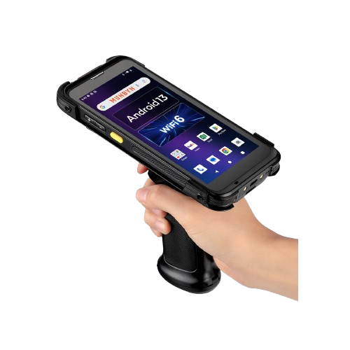

Skaner

Specyfikacja techniczna:
Typ czytnika: Imager 2D (odczytuje kody 1D, 2D, QR, DataMatrix)
Łączność: Bluetooth 5.0 + odbiornik USB 2.4GHz (zasięg do $50$ m)
Bateria: $2200$ mAh (do $12$ godzin ciągłej pracy)
Odporność: Certyfikat IP54 (odporny na kurz i upadki z wysokości $1,5$ m)
Tryby pracy: Real-time (wysyłka natychmiastowa) lub Inventory (pamięć do $100\ 000$ kodów)
450.00 zł
Opis produktu
Bezprzewodowy skaner kodów kreskowych klasy przemysłowej, zaprojektowany z myślą o intensywnej pracy w magazynach e-commerce. Dzięki zaawansowanemu modułowi skanującemu typu Imager, urządzenie błyskawicznie radzi sobie z odczytem kodów uszkodzonych, zamazanych lub znajdujących się pod grubą warstwą folii stretch. Ergonomiczna konstrukcja typu "pistolet" minimalizuje zmęczenie dłoni podczas wielogodzinnych inwentaryzacji. Skaner jest w pełni kompatybilny z systemami Windows, macOS, Android oraz iOS, co pozwala na bezpośrednią integrację z mobilnymi aplikacjami magazynowymi.